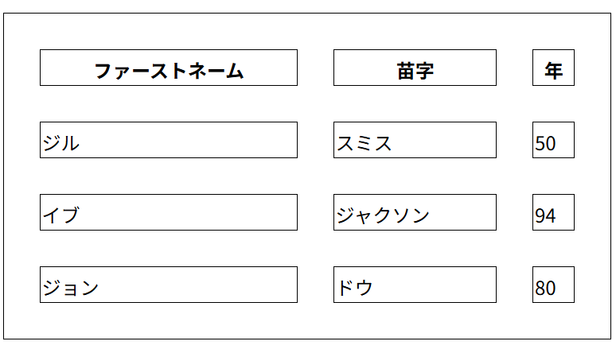

ctrl+shift+v
マウスドラッグで下につけたり横に着けたりできる
＜a href =”URL”＞ページ名＜/a＞みたいなかんじ
<a href="links.html"><img src="hogehoge.png"><a>
aタグと一緒に使われる属性。
<a href="links.html" target="_self">links.html_self</a>
JavaScriptコードを利用して、ボタンをリンクとして動作させる。
<button onclick="document.location='links.html'">ぼたーｎ</button>
メアドをはっつけることも可能
カスメアド大公開
<a href="mailto:soreikeebiyarou@gmail.com">カスメアド大公開</a>

＜img src="hama-shizudaisai_logo.png" alt="静大祭のロゴ" width="200" height="200"＞srcは「source」の略。略し方キモ過ぎる

<img src="https://…/s660/ai_torikomareta_human.png" alt="AIに取り込まれた人のイラスト" style="width: 200px;height: 200px;>動くザコシをいれてもよい
<img src="zakoshi.gif" alt="ザコシ" style="width: 100px;height: 100px;">画像サイズ指定で、pxや%ではなくvmを使うと、画面サイズに合わせて拡大/縮小してくれる
注意：大きな画像を入れすぎるとページが重たくなるので気を付けて
this is a praragraph
カーソルを上に載せると…？
書いたままだしてくれる
そう
preタグなら
こんなかんじに
自由自在。
pre = preserve(保つ)
頻出接頭辞なのによくこれにしようと思いましたね
brタグと使い方は同じ
線を引いてくれる
太字のBや斜体のI
みたいに、覚えやすいやつもあるけど、ほかにもいろいろある。
＜p style="font-weight:bold;"＞○○＜/p＞
引用文をどうこうするために作られたやつ。
The HTML <blockquote> element defines a section that is quoted from another source. Browsers usually <indent blockquote> elements.
The HTML <q> tag defines a short quotation.
I want to study
小学校の図書館にあった星の王子さまは、読書感想画に使ったが、表紙しか覚えていない。
citeで挟んでいるだけなので略
This text will be written from right to left
<bdo dir="rtl">This text will be written from right to left</bdo>
<h2 id="C4">Chapter 4</h2>
<a href="#C4">Junp to Chapter4</a>
＜（任意のタグ） style="（任意のCSSプロパティ）:（任意の値）;"＞
たとえば、このページだと
＜body style="background-color:aliceblue">＜/body＞がある。
パラグラフの背景カラーを変えることも。
パラグラフの背景カラー
ie-i
＜p style="background-color: powderblue;">パラグラフの背景カラー＜br＞ie-i＜/p＞
This is a paragraph.
This is a paragraph.
Centered paragraph.
Hello World
<head>の中に入れる
styleタグの中はすべてCSS表記に変更される。
このHTMLファイルにも以下のようなものを実装してみた。
<head>
<meta charset="utf-8">
<style>
h1 {color: #554ae8d5;}
h2 {
color: #343ca0c8;
font-family: 'Gill Sans', 'Gill Sans MT', Calibri, 'Trebuchet MS', sans-serif;
font-size: 160%;
padding-top: 25px;
padding-bottom: 0px;
}
h3{
padding-top:10px;
padding-bottom: 0px;
}
p{
margin-top: 0px;
}
</style>
preくん役に立つね
たいていの場合、CSSは別のファイルに作って、リンクを置くことが多い。
もちろん、headタグの中に置くことがほとんど。
絶対パスでも相対パスでも。
<link rel="styleseet" href="hogehoge.css">
<style>
a:link {
color: green;
background-color: transparent;
text-decoration: none;
}
a:visited {
color: pink;
background-color: transparent;
text-decoration: none;
}
a:hover {
color: red;
background-color: transparent;
text-decoration: underline;
}
a:active {
color: yellow;
background-color: transparent;
text-decoration: underline;
}
</style>
ボタン再現
<style>
a:link, a:visited {
background-color: #f44336;
color: white;
padding: 15px 25px;
text-align: center;
text-decoration: none;
display: inline-block;
}
a:hover, a:active {
background-color: red;
}
</style>
条件によって出す画像を変更することができる。
<picture>
<source media="(min-width:1000px)" srcset="banner01.png">
<source media="(min-width:800px)" srcset="kirby.png">
<img src="link_picture.png">
</picture>
ファビコンはタブに表示されるアイコンのこと
次の要素を追加する
これが入った<html> <head> <title>My Page Title</title> <link rel="icon" type="image/x-icon" href="favicon.png"> </head> <body> <h1>This is a Heading</h1> <p>This is a paragraph.</p> </body> </html>
| HTMLタグ | 効果 | その他 |
|---|---|---|
| table | 表を用意する | 表に関連するすべてのタグの親 |
| th | 表の一番上の行を示す。 | table header 票の左から右に埋まる。使うかは任意。 |
| tr | 表の行を示す。 | table row |
| td | セル一つ一つのデータ | table data |
<table>
<tr>
<th>HTMLタグ</th>
<th>効果</th>
<th>その他</th>
</tr>
<tr>
<td>table</td>
<td>表を用意する</td>
<td>表に関連するすべてのタグの親</td>
</tr>
<tr>
<td>th</td>
<td>表の一番上の行を示す。</td>
<td>table header 票の左から右に埋まる。使うかは任意。</td>
</tr>
<tr>
<td>tr</td>
<td>表の行を示す。</td>
<td>table row</td>
</tr>
<tr>
<td>td</td>
<td>セル一つ一つのデータ</td>
<td>table data</td>
</tr>
</table>
表のヘッダーが横のバージョン
| Firstname | Jill | Eve |
|---|---|---|
| Lastname | Smith | Jackson |
| Age | 94 | 50 |
<table>
<tr>
<th>Firstname</th>
<td>Jill</td>
<td>Eve</td>
</tr>
<tr>
<th>Lastname</th>
<td>Smith</td>
<td>Jackson</td>
</tr>
<tr>
<th>Age</th>
<td>94</td>
<td>50</td>
</tr>
</table>
ヘッダーの左詰めも可能
th {
text-align: left;
}
th（ヘッダー）にcolspan属性を使用
<th colspan="2">Name</th>
th（ヘッダー）にrowspan属性を使用

...
<tr>
<th rowspan="2">Phone</th>
<td>555-1234</td>
</tr>
...
<table style="width:100%">
<caption>Monthly savings</caption>
<tr>......
注意：表タイトル<caption>は<title>の直後に置かなければならない
今はこんな感じ
table, th, td{
border: 1px solid black;
}
詳細（W3Schools）
| CSSプロパティ名 | 説明 | 詳細 |
|---|---|---|
| border: 1px solid black; | 境界線を追加する | この表みたいな |
| border-collapse: collpase; | 表の境界線を1つにする | |
| background-color | th, cdの中に入れる tableに入れない | |
| border-radius: 10px; | 境界線が丸く | |
| border border-radius の親をth,tdのみにする | th, td{}のみにする。tableを親にしない | |
| border-style | いろいろな境界線に | |
| border-color | 境界線の色が変わる | |
| padding | ふつうのpaddingと変わらん | |
| border-spacing | 数値を入れることで、セル間隔をあけることができる |  |
| tr:nth-child(even){ background-color: #D6EEEE; } |
行で交互に色を塗る ()内をoddにすると順序が逆に |
|
| tr:nth-child(even), th:nth-child(even){ background-color: #D6EEEE; } |
列で交互に色を塗る！ ヘッダーを適用させたくないときはthを除く |
|
tr:nth-child(even) {
background-color: rgba(150, 212, 212, 0.4);
}
th:nth-child(even), td:nth-child(even) {
background-color: rgba(150, 212, 212, 0.4);
}
|
チェック模様 最後の0.4(a)は透明度 |
|
|
tr { border-bottom: 1px solid #ddd; } |
水平区切り線 | |
| tr:hover {background-color: #D6EEEE;} | マウスカーソルを持ってくると、そこに色が付く | |
<table>
<colgroup>
<col span="2" style="background-color: #D6EEEE">
</colgroup>
<tr>
...
|
最初の二列に色を付ける | |
| <colgroup> <col span="5"> <col span="1" style="background-color: #D6EEEE"> <col span="1" style="background-color: pink"> </colgroup> |
複数列に異なる色を |  |
body全体にしたいときは、tableにstyle="width:100%"
を追加する。何気に上のテーブルはそのように設定されている。
だるいから省略
<ul>
<li>Coffee</li>
<li>Tea</li>
<li>Milk</li>
</ul>
リストの「・」デザインを変更できる
<ul style="list-style-type:disc;">
<ul style="list-style-type:circle;">
<ul style="list-style-type:square;">
<ul style="list-style-type:none;">
<style>
ul{
list-style-type: none;
margin:0;
padding:0;
overflow: hidden;
background-color: #333333;
}
li{
float: left;
}
li a{
display: block;
color: white;
text-align: center;
padding: 16px;
text-decoration: none;
}
li a:hover{
background-color: #111111;
}
</style>
</head>
<body>
<ul>
<li><a href="#home">Home</a></li>
<li><a href="#news">News</a></li>
<li><a href="#contact">Contact</a></li>
<li><a href="#about">About</a></li>
</ul>
</body>
<ol>
<li>Coffee</li>
<li>Tea</li>
<li>Milk</li>
</ol>
これも変えられるゾ
<ol type="1">
<li>test</li>
</ol>
<ol type="A">
<li>test</li>
</ol>
<ol type="a">
<li>test</li>
</ol>
<ol type="I">
<li>test</li>
</ol>
<ol type="i">
<li>test</li>
</ol>
<ol start="50">
<li>test</li>
</ol>

<dl>
<dt>Coffee</dt>
<dd>- black hot drink</dd>
<dt>Milk</dt>
<dd>- white cold drink</dd>
</dl>